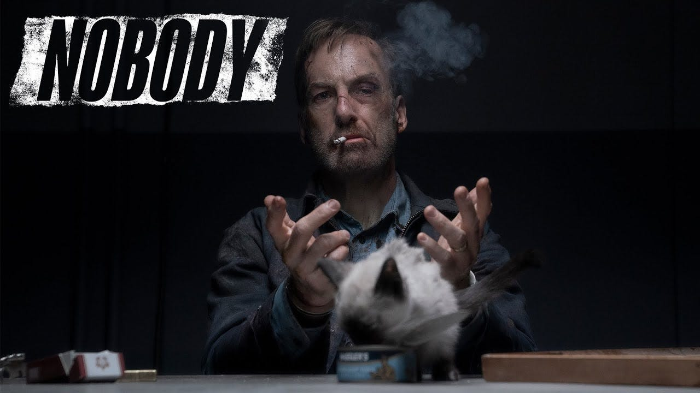
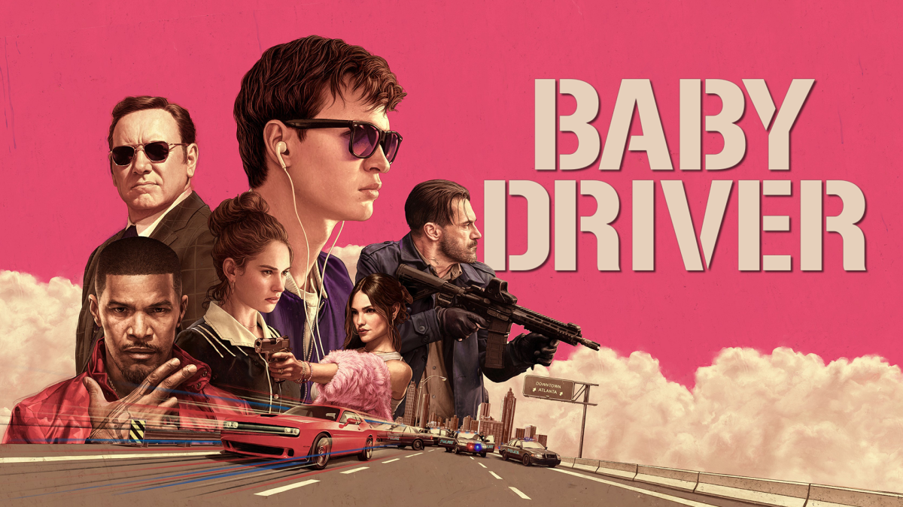
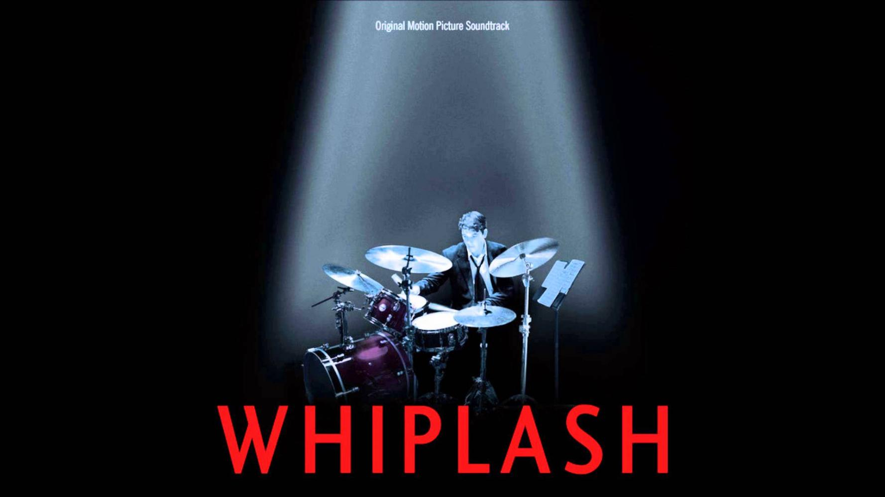
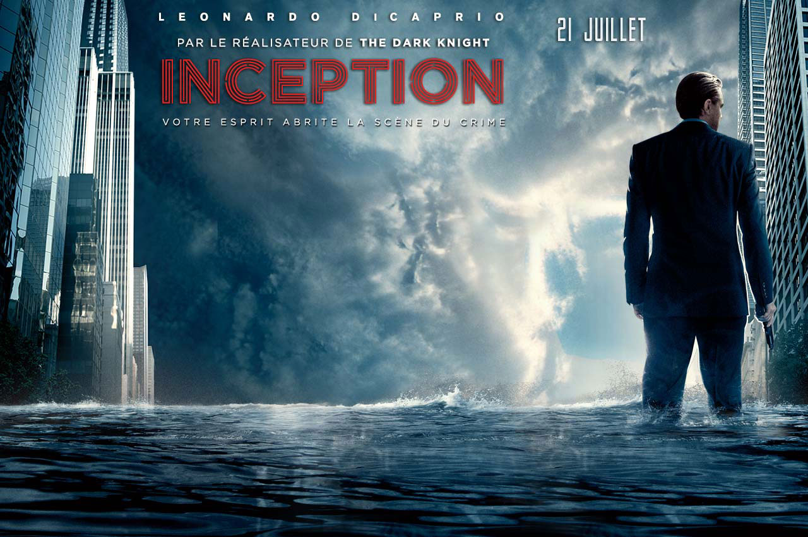
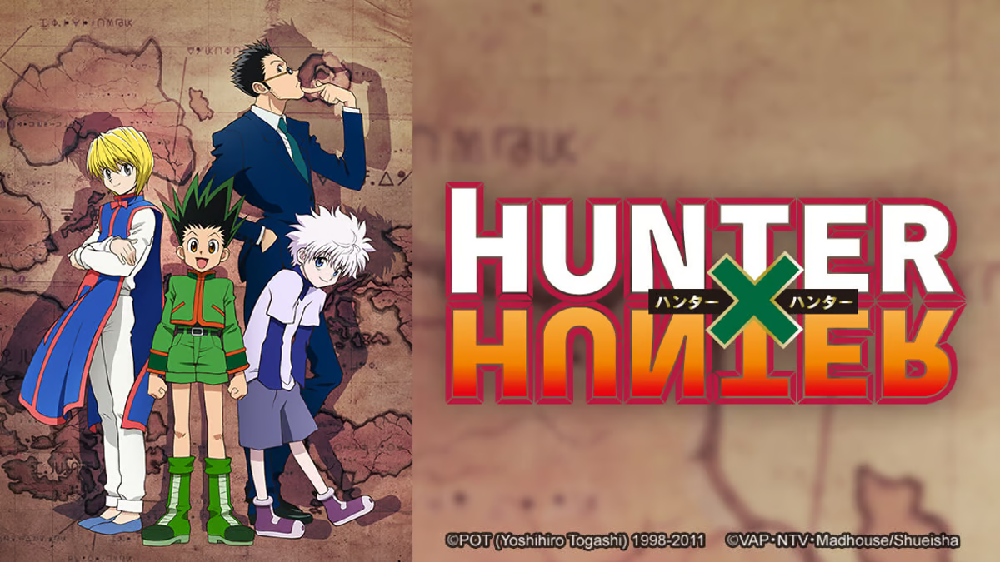
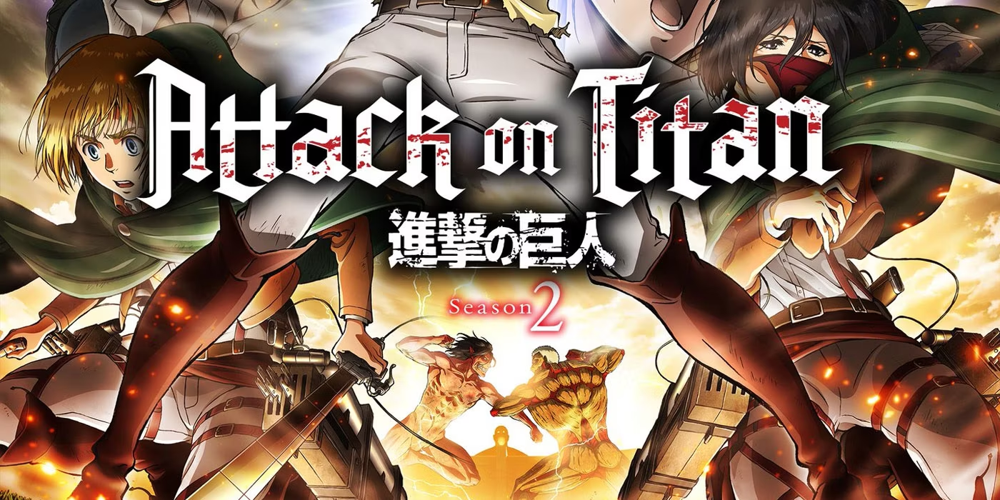
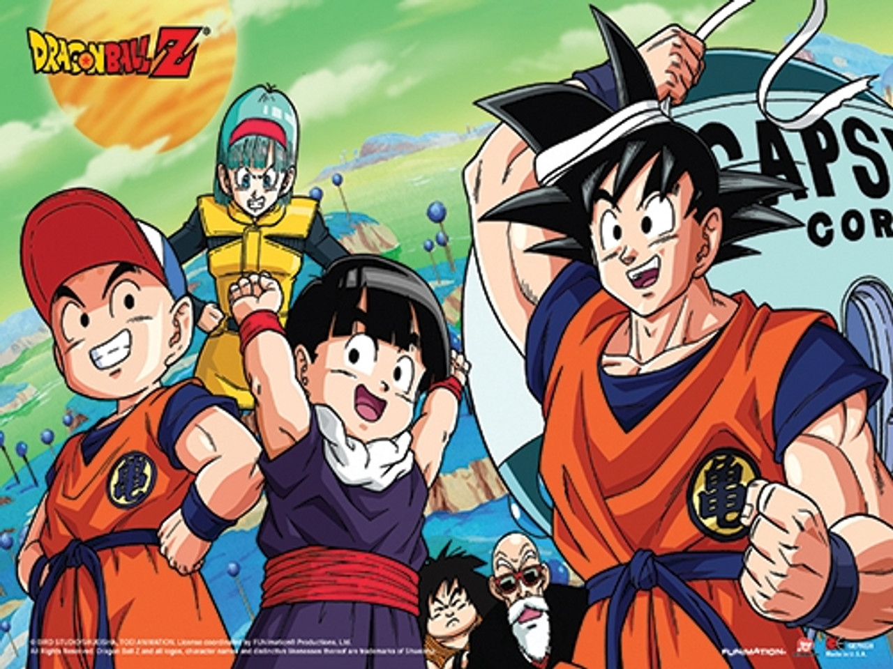
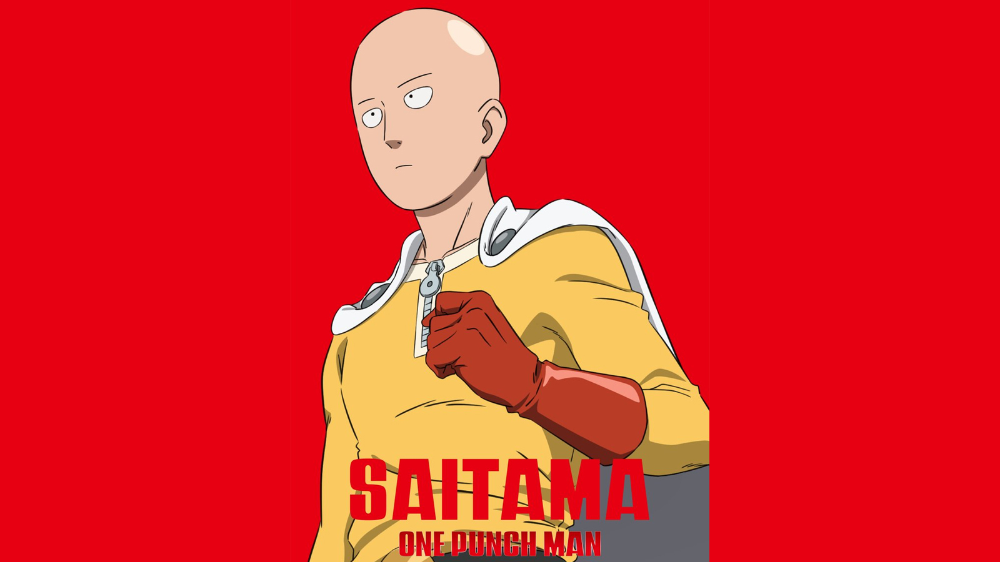

#1 in my Home
JOHN WICK
CHAPTER 4
Included with Prime
U/A 13+
PrimeAmazon Original series
Mirzapur
Included with Prime
A
The Boys
Included with Prime
A
Fallout
Included with Prime
U/A 16+
The Terminal List
Included with Prime
U/A 13+
Farzi
Included with Prime
A
Gen V
Included with Prime
A
PrimeRecommended movies

Included with Prime
Nobody
2021 2 h 16 m
U/A 13+
A docile family man slowly reveals his true character after his house gets burgled by two petty thieves, which, coincidentally, leads him into a bloody war with a Russian crime boss.

Included with Prime
Baby Driver
2017 1 h 53 m
U/A 13+
Doc forces Baby, a former getaway driver, to partake in a heist, threatening to hurt his girlfriend if he refuses. But the plan goes awry when their arms dealers turn out to be undercover officers.

Included with Prime
Batman
2022 2 h 56 m
U/A 13+
When a sadistic serial killer begins murdering key political figures in Gotham, The Batman is forced to investigate the city's hidden corruption and question his family's involvement.
Included with Prime
Arrival
2016 1 h 56 m
U/A 13+
Linguist Louise Banks leads a team of investigators when gigantic spaceships touch down around the world. As nations teeter on the verge of global war, Banks and her crew must find a way to communicate with the extraterrestrial visitors.

Included with Prime
Whiplash
2014 1 h 46 m
U/A 13+
A promising young drummer enrolls at a cut-throat music conservatory where his dreams of greatness are mentored by an instructor who will stop at nothing to realize a student's potential.
Included with Prime
Interstellar
2014 2 h 49 m
U/A 13+
When Earth becomes uninhabitable in the future, a farmer and ex-NASA pilot, Joseph Cooper, is tasked to pilot a spacecraft, along with a team of researchers, to find a new planet for humans.

Included with Prime
Inception
2010 2 h 28 m
U/A 13+
A thief who steals corporate secrets through the use of dream-sharing technology is given the inverse task of planting an idea into the mind of a C.E.O., but his tragic past may doom the project and his team to disaster.
PrimeAnime

Included with Prime
Hunter x Hunter
2011-2014 EP : 148
U/A
Gon Freecss aspires to become a Hunter, an exceptional being capable of greatness. With his friends and his potential, he seeks out his father, who left him when he was younger.

Included with Prime
Demon Slayer
2019 - 20xx EP : 69
U/A
A family is attacked by demons and only two members survive - Tanjiro and his sister Nezuko, who is turning into a demon slowly. Tanjiro sets out to become a demon slayer to avenge his family and cure his sister.

Included with Prime
Attack On Titan
2011-2014 EP : 98
U/A
After his hometown is destroyed, young Eren Jaeger vows to cleanse the earth of the giant humanoid Titans that have brought humanity to the brink of extinction.
Included with Prime
Death Note
2006 EP : 37
U/A
An intelligent high school student goes on a secret crusade to eliminate criminals from the world after discovering a notebook capable of killing anyone whose name is written into it.

Included with Prime
Dragon Ball Z
1996-2003 EP : 277
U/A
With the help of the powerful Dragonballs, a team of fighters led by the saiyan warrior Goku defend the planet earth from extraterrestrial enemies.

Included with Prime
One Punch Man
2015-20XX EP : 25
U/A
The story of Saitama, a hero that does it just for fun & can defeat his enemies with a single punch.